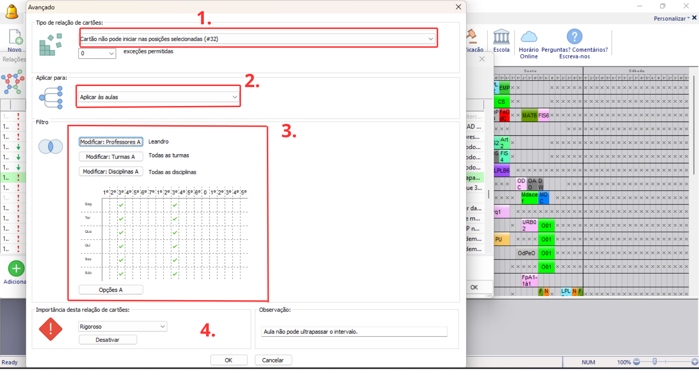
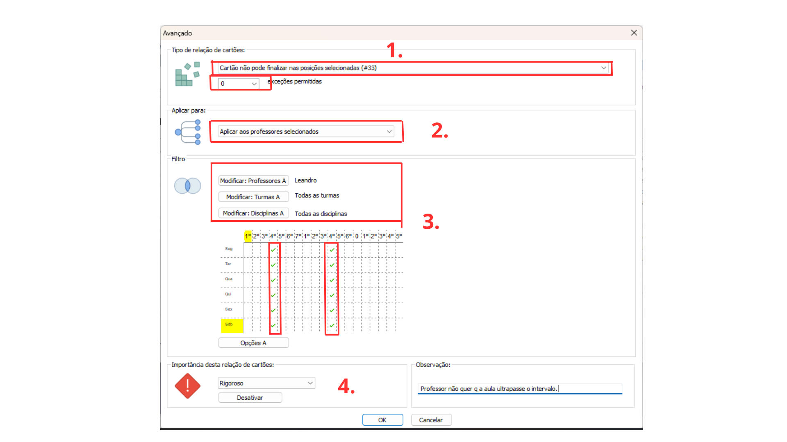

Detalhes do post:
Preservação de Aulas Duplas sem Pausa no Intervalo:
Descrição:O professor não quer que o seu cartão de aula dupla seja interrompido ao meio pelo período de intervalo.

SOLUÇÃO 1:
Para resolver esse tipo de situação devemos restringir a colocação dos cartões das aulas desses professores usando as relações entre cartões avançados (imagem “acesso a aba de restrições avançadas”).
1- Selecionar o tipo de restrição “Cartão não pode iniciar nas posições selecionadas (#32)”, na caixa de texto logo abaixo digitar o número de exceções que o software pode considerar no momento de criar a grade de horários.
2- Selecionar a opção “Aplicar às aulas”, para que a restrição afete apenas aquelas aulas especificadas pelo professor solicitante (neste caso também podemos selecionar a opção “aplicar aos professores selecionados”).
3- Utilize o filtro “Modificar Professores” para selecionar o professor que solicitou a restrição; Os demais filtros “Modificar Turmas” e “Modificar Disciplinas” podem permanecer aplicando-se a todos, ou selecionar especificamente as turmas e disciplinas que o professor quer que sejam afetadas e para quais turmas.
Selecionar no quadro de horários a aula que antecede o intervalo, considerando que os cartões de aula deste determinado professor são duplos, o sistema não vai alocar nenhum cartão passando pelo intervalo, porque para isso ocorrer o cartão deveria começar na aula que antecede o intervalo.
4- Selecione a importância da Restrição, entre: baixa, normal, alta, rigoroso ou otimizar; de acordo com a importância a ser atribuída a essa relação na instituição.
Também escreva uma observação que facilite a identificação da restrição e explique seu objetivo.
Clique em “ok” no canto inferior para salvar a relação.
SOLUÇÃO 2:

:
Para resolver esse tipo de situação devemos restringir a colocação dos cartões das aulas usando as relações entre cartões avançados (imagem “acesso a aba de restrições avançadas”).
1- Selecione o tipo de restrição “Cartão não pode finalizar nas posições selecionadas (#32)”, na caixa de texto logo abaixo digitar o número de exceções que o software pode considerar no momento de criar a grade de horários.
2- Selecione a opção “Aplicar aos professores selecionados”, para que a restrição afete apenas o professor solicitante (neste caso também podemos selecionar a opção “aplicar às aulas”).
3- Utilize o filtro “Modificar Professores” para selecionar o professor que solicitou a restrição; Os demais filtros “Modificar Turmas” e “Modificar Disciplinas” podem permanecer aplicando-se a todos, ou selecionar especificamente as turmas e disciplinas que o professor quer que sejam afetadas e para quais turmas.
Selecionar no quadro de horários a aula logo após o intervalo, considerando que os cartões de aula deste determinado professor são duplos, o sistema não vai alocar nenhum cartão passando pelo intervalo, porque para isso ocorrer o cartão deveria terminar na aula logo após o intervalo.
4- Selecione a importância da Restrição, entre: baixa, normal, alta, rigoroso ou otimizar; de acordo com a importância a ser atribuída a essa relação na instituição..
Também escreva uma observação que facilite a identificação da restrição e explique seu objetivo.
Clique em “ok” no canto inferior para salvar a relação.